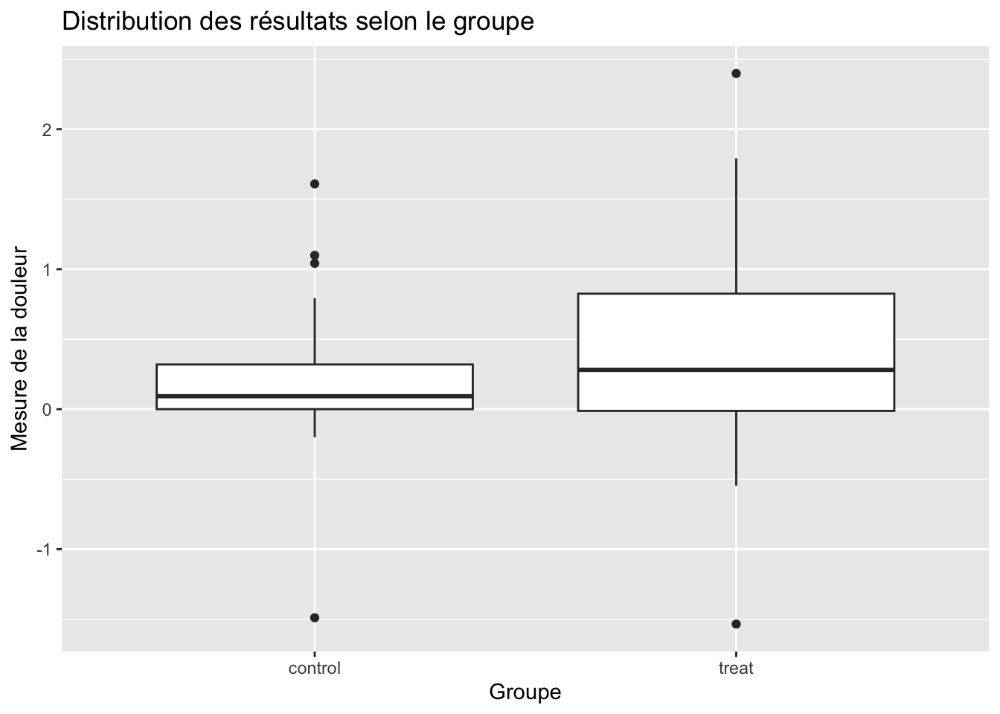
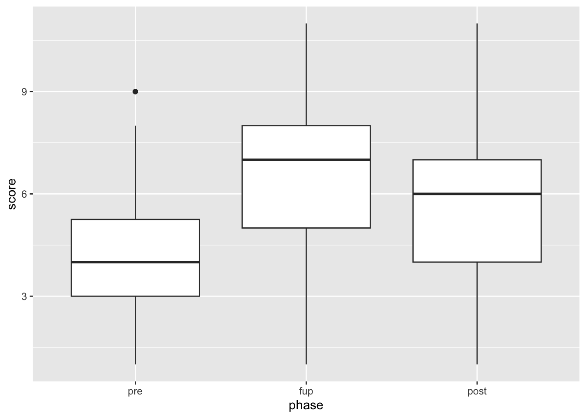

On définit le MAD (Median Absolute Deviation) qui peut être vu comme un équivalent non paramétrique à \(\sigma\).
\[
MAD=\text{median}|X_i-\widetilde X|.
\] Donc pour \(X\sim \mathcal N(\mu,\sigma)\) on a par définition \(P(|X-\mu|<MAD)=0.5\) ce qui donne \(P(|Z|<\frac{MAD}{\sigma})=0.5\) où \(Z\sim \mathcal N(0,1)\) et donc \(\frac{MAD}{\sigma}=\Phi^{-1}(\frac{3}{4}).\)
Comparaison de deux groupes indépendants
On commence par l’exemple
library(coin)
Loading required package: survival
data("neuropathy")library(ggplot2)library(dplyr)
Attaching package: 'dplyr'
The following object is masked from 'package:kableExtra':
group_rows
The following objects are masked from 'package:stats':
filter, lag
The following objects are masked from 'package:base':
intersect, setdiff, setequal, union
On représente graphiquement les données
ggplot(neuropathy,aes(x=group,y=pain))+geom_boxplot()+labs(title="Distribution des résultats selon le groupe",y="Mesure de la douleur",x="Groupe" )

On regarde aussi les paramètres de position et de dispersion
Two Sample t-test
data: x and y
t = -1.3279, df = 56, p-value = 0.1896
alternative hypothesis: true difference in means is not equal to 0
95 percent confidence interval:
-0.5784146 0.1172622
sample estimates:
mean of x mean of y
0.1995667 0.4301429
# Welcht.test(x,y,var.equal=F)
Welch Two Sample t-test
data: x and y
t = -1.3094, df = 46.051, p-value = 0.1969
alternative hypothesis: true difference in means is not equal to 0
95 percent confidence interval:
-0.5850265 0.1238742
sample estimates:
mean of x mean of y
0.1995667 0.4301429
# test de Yuenlibrary(robnptests)
Puis les tests non paramétriques :
# Test de Mann-Withneywilcox.test(x,y)
Warning in wilcox.test.default(x, y): cannot compute exact p-value with ties
Wilcoxon rank sum test with continuity correction
data: x and y
W = 357, p-value = 0.3301
alternative hypothesis: true location shift is not equal to 0
trimmed_test(x,y)
Randomization test based on trimmed means (1000 random permutations)
data: x and y
trimmed t = -1.3775, df = 34, p-value = 0.1538
alternative hypothesis: true location shift is not equal to 0
sample estimates:
Trimmed mean of x Trimmed mean of y
0.1320000 0.3602778
# Test de Behrens-Fisherlibrary(npsm)
Loading required package: Rfit
fp.test(x,y)
statistic = 0.9124277 , p-value = 0.3653668
# Test de permutationlibrary(coin)oneway_test(pain~group,data=neuropathy)
Asymptotic Two-Sample Fisher-Pitman Permutation Test
data: pain by group (control, treat)
Z = -1.3191, p-value = 0.1871
alternative hypothesis: true mu is not equal to 0
# Test de Brunner-Manzellibrary(brunnermunzel)brunnermunzel.test(x,y)
Brunner-Munzel Test
data: x and y
Brunner-Munzel Test Statistic = 0.94424, df = 41.597, p-value = 0.3505
95 percent confidence interval:
0.4146606 0.7353394
sample estimates:
P(X<Y)+.5*P(X=Y)
0.575
Les tests sur les paramètres d’échelle
# Test de Levenelibrary(car)
Loading required package: carData
Attaching package: 'car'
The following object is masked from 'package:Rfit':
subsets
The following object is masked from 'package:dplyr':
recode
leveneTest(pain~group,data=neuropathy)
Levene's Test for Homogeneity of Variance (center = median)
Df F value Pr(>F)
group 1 4.4733 0.03889 *
56
---
Signif. codes: 0 '***' 0.001 '**' 0.01 '*' 0.05 '.' 0.1 ' ' 1
Paired t-test
data: x and y
t = -5.7712, df = 79, p-value = 1.476e-07
alternative hypothesis: true mean difference is not equal to 0
95 percent confidence interval:
-1.8492297 -0.9007703
sample estimates:
mean difference
-1.375
Show the code
wilcox.test(x,y,paired=T)
Wilcoxon signed rank test with continuity correction
data: x and y
V = 441, p-value = 1.335e-06
alternative hypothesis: true location shift is not equal to 0
Show the code
library(EnvStats)
Attaching package: 'EnvStats'
The following object is masked from 'package:car':
qqPlot
The following objects are masked from 'package:stats':
predict, predict.lm
Show the code
oneSamplePermutationTest(x-y)
Results of Hypothesis Test
--------------------------
Null Hypothesis: Mean (Median) = 0
Alternative Hypothesis: True Mean (Median) is not equal to 0
Test Name: One-Sample Permutation Test
(Based on Sampling
Permutation Distribution
5000 Times)
Estimated Parameter(s): Mean = -1.375
Data: x - y
Sample Size: 80
Test Statistic: |Sum(x)| = 110
P-value: 0
ANOVA à un facteur sur Groupes indépendants
Hettmansperger and McKean (2011) étudient l’effet de quatre drogues sur la réduction de cholesterol (LDL) chez les cailles. Attention les groupes sont déséquilibrées !
Pour ceux qui préfèrent les contrastes : on peut se dire que le deuxième traitement paraît réduire de façon plus efficace le ldl que les autres. On pourrait tester \(H_0:\mu_2=\frac1{3}(\mu_1+\mu_3+\mu_4)\) versus \(H_1:\mu_2\not =\frac1{3}(\mu_1+\mu_3+\mu_4)\)
# Estimation du modèle linéaire :mod=lm(ldl~treat,data=quail)H=as.matrix(c(-1/3,1,-1/3,-1/3))# Estimation de la différence des moyennes mod$coefficients%*%H
[,1]
[1,] -44.48519
# Estimation de l'erreur standardsqrt(diag(t(H)%*%vcov(mod)%*%H))
[1] 12.49332
# Calcul de la statistique de statsz=mod$coefficients%*%H/sqrt(diag(t(H)%*%vcov(mod)%*%H))# Calcul de la p-value2*(1-pnorm(abs(z)))
[,1]
[1,] 0.0003698421
Deuxième modélisation : test de KW
kruskal_test(ldl~treat,data=quail)
Asymptotic Kruskal-Wallis Test
data: ldl by treat (1, 2, 3, 4)
chi-squared = 7.1879, df = 3, p-value = 0.06614
library(npsm)oneway.rfit(y = quail$ldl, g = quail$treat)
Call:
oneway.rfit(y = quail$ldl, g = quail$treat)
Overall Test of All Locations Equal
Drop in Dispersion Test
F-Statistic p-value
3.916944 0.016394
Pairwise comparisons using Rfit
data: quail$ldl and quail$treat
1 2 3
2 0.0046 - -
3 0.6315 0.0157 -
4 0.5599 0.0243 0.9069
P value adjustment method: none
Retour sur les contrastes :
H=as.matrix(c(-1/3,1,-1/3,-1/3))# Estimation de la différencemod=rfit(ldl~treat-1,data=quail)mod$coefficients%*%H
[,1]
[1,] -22
# Estimation de l'erreur standardsqrt(diag(t(H)%*%vcov(mod)%*%H))
[1] 6.781191
# Calcul de la statistique de statsz=mod$coefficients%*%H/sqrt(diag(t(H)%*%vcov(mod)%*%H))# Calcul de la p-value2*(1-pnorm(abs(z)))
# A tibble: 3 × 5
phase M SD Med MAD
<fct> <dbl> <dbl> <dbl> <dbl>
1 pre 4.38 1.87 4 1.48
2 post 5.75 2.33 6 2.97
3 fup 6.38 2.20 7 1.48
# Pour ré-ordonner les facteurs de la variable phaseOBrienKaiserLong=OBrienKaiserLong |>mutate(phase=factor(phase,levels=c("pre","fup","post")))ggplot(OBrienKaiserLong,aes(x=phase,y=score))+geom_boxplot()

library(lmerTest)
Loading required package: lme4
Loading required package: Matrix
Attaching package: 'lmerTest'
The following object is masked from 'package:lme4':
lmer
The following object is masked from 'package:stats':
step
Type III Analysis of Variance Table with Satterthwaite's method
Sum Sq Mean Sq NumDF DenDF F value Pr(>F)
phase 167.5 83.75 2 222 38.48 4.487e-15 ***
---
Signif. codes: 0 '***' 0.001 '**' 0.01 '*' 0.05 '.' 0.1 ' ' 1
library(emmeans)
Welcome to emmeans.
Caution: You lose important information if you filter this package's results.
See '? untidy'
postHoc=emmeans(mod,specs =~phase)pwpm(postHoc)
pre fup post
pre [4.38] <.0001 <.0001
fup -2.000 [6.38] 0.0215
post -1.375 0.625 [5.75]
Row and column labels: phase
Upper triangle: P values adjust = "tukey"
Diagonal: [Estimates] (emmean)
Lower triangle: Comparisons (estimate) earlier vs. later
On peut aussi faire un contraste par exemple pour tester \(H_0:\mu_{pre}=\frac 1{2}(\mu_{fup}+\mu_{post}).\)
mod1=summary(lmer(score~phase-1+(1|id),data=OBrienKaiserLong))## Pour l'estimation des moyennes :moy=mod1$coefficients[,"Estimate"]## Pour l'estimation de la matrice de covariancemod1$vcov
3 x 3 Matrix of class "dpoMatrix"
phasepre phasefup phasepost
phasepre 0.1857295 0.1585242 0.1585242
phasefup 0.1585242 0.1857295 0.1585242
phasepost 0.1585242 0.1585242 0.1857295
A vous de jouer.
Show the code
H=as.matrix(c(-1,1/2,1/2))# Estimation de la différence de moyenne :M=moy%*%Hprint(M)# Estimation de l'erreur standard :ES=sqrt(diag(t(H)%*%mod1$vcov%*%H))print(ES)# Estimation de la statistique de test :z=M/ESprint(z)# Estimation de la p-value2*(1-pnorm(abs(z)))
On peut aussi faire le test de Friedman :
friedman_test(score~phase,data=OBrienKaiserLong)
Asymptotic Friedman Test
data: score by
phase (pre, fup, post)
stratified by block
chi-squared = 36.312, df = 2, p-value = 1.303e-08
`summarise()` has grouped output by 'phase'. You can override using the
`.groups` argument.
# A tibble: 9 × 6
# Groups: phase [3]
phase treatment M SD Med MAD
<fct> <fct> <dbl> <dbl> <dbl> <dbl>
1 pre control 4.2 1.68 4 1.48
2 pre A 5 2.15 5 2.97
3 pre B 4.14 1.80 4 1.48
4 fup control 4.4 1.80 4 1.48
5 fup A 7.25 2.20 7 2.97
6 fup B 7.29 1.43 7 1.48
7 post control 4 1.80 3 1.48
8 post A 6.5 2.59 7 2.97
9 post B 6.57 1.82 6 1.48
treatment = control
pre fup post
pre [4.2] 0.8626 0.8626
fup -0.2 [4.4] 0.5549
post 0.2 0.4 [4.0]
treatment = A
pre fup post
pre [5.00] <.0001 0.0018
fup -2.25 [7.25] 0.1936
post -1.50 0.75 [6.50]
treatment = B
pre fup post
pre [4.14] <.0001 <.0001
fup -3.143 [7.29] 0.0753
post -2.429 0.714 [6.57]
Row and column labels: phase
Upper triangle: P values adjust = "tukey"
Diagonal: [Estimates] (emmean)
Lower triangle: Comparisons (estimate) earlier vs. later
On peut le faire aussi sous forme de contrastes comme précédemment.
Reprendre l’exemple précédent
On ajoute le facteur group à l’exemple Baumann. Faire les analyses nécessaires.